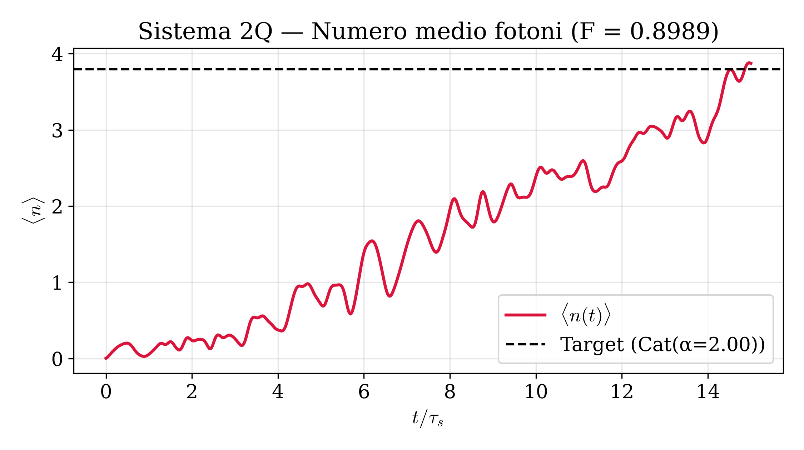
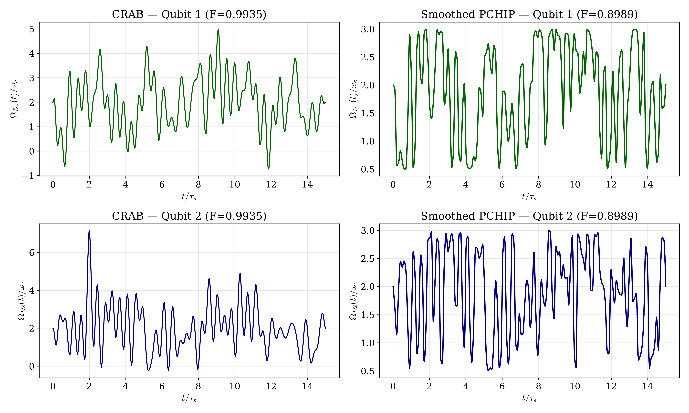
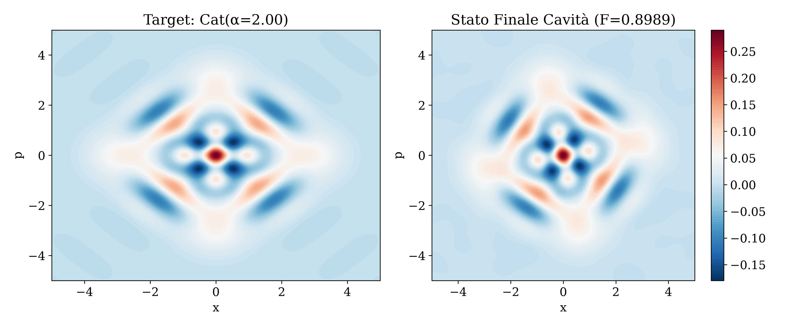
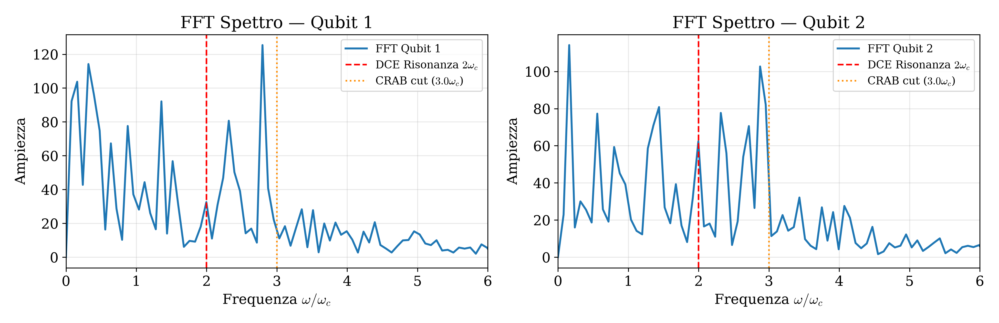

| Fase | Fedeltà (ℱ) | Costo C² | Tempo (s) | Dettagli / Convergenza |
|---|---|---|---|---|
| CRAB (Miglior Seed #3) | 0.993530 |
813.15 |
2891.9s | Media 0.9903 ± 0.0024 su 8 seeds |
| GRAPE (L-BFGS-B) | 0.999557 |
666.65 |
1060.8s | 150 iterazioni (bound (0.5, 3.0)) |
| PCHIP Smoothed (Finale) | 0.898879 | 654.18 | 5.7s | Interpolazione cubica lisciata (600 time slots) |
| Canale | Slew Rate Max (max |dΩ/dt|) | Slew Rate RMS | Costo Canale Ck² | Banda Passante al 99% (ω99%) |
|---|---|---|---|---|
| Qubit 1 | 5.116 |
1.523 |
328.65 |
5.43 ωc |
| Qubit 2 | 6.241 |
1.664 |
325.53 |
7.03 ωc |



